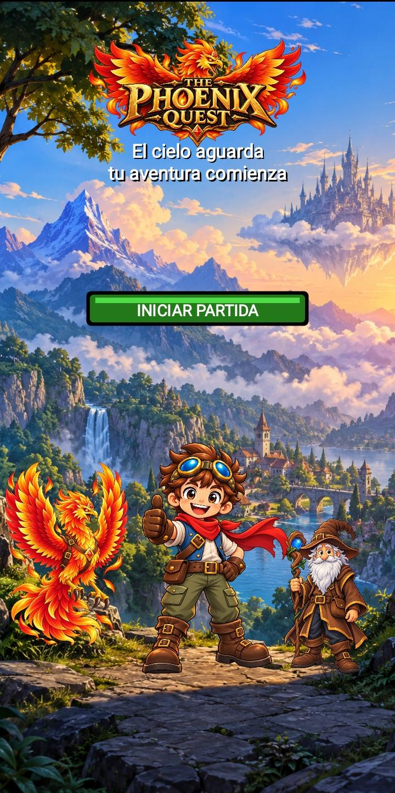
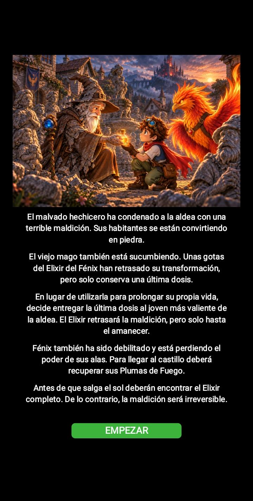
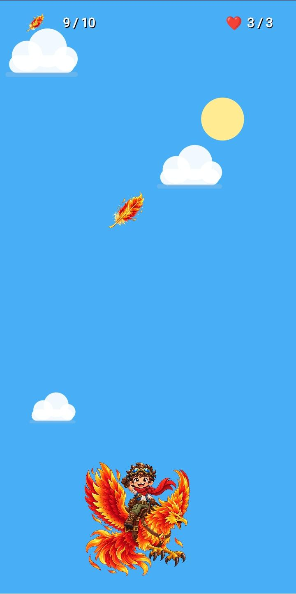
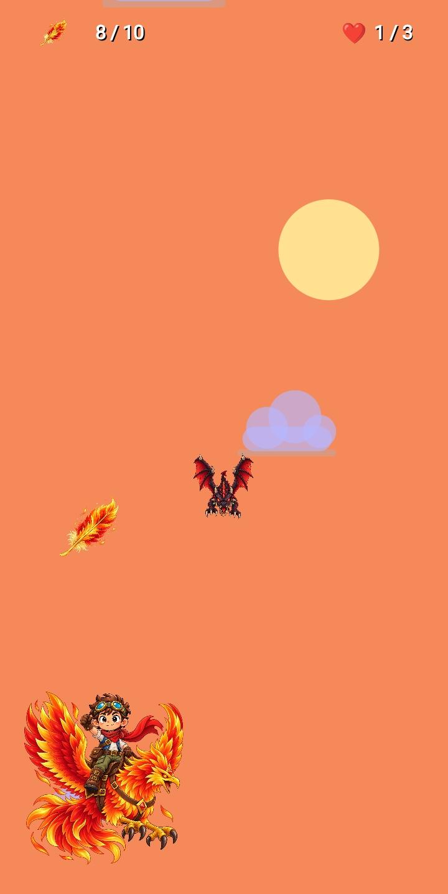
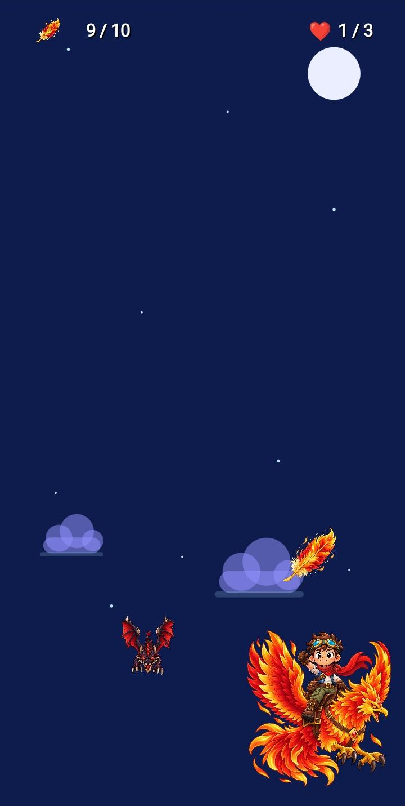
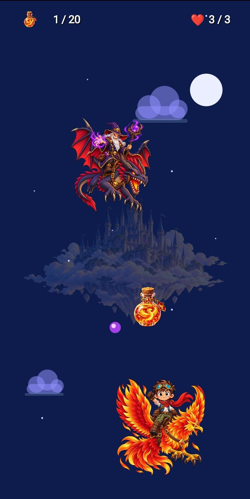
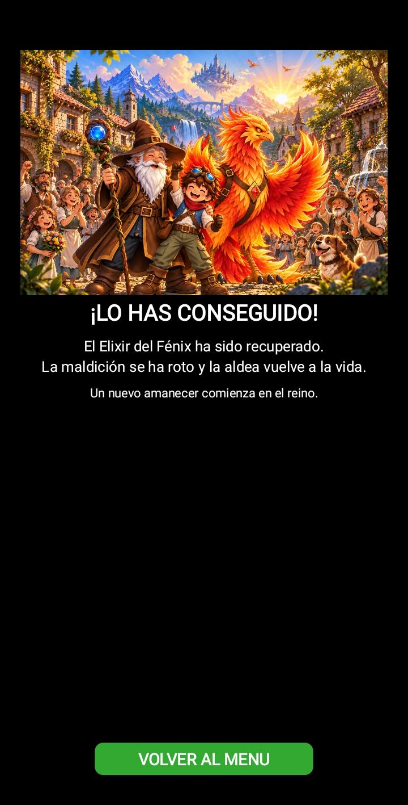
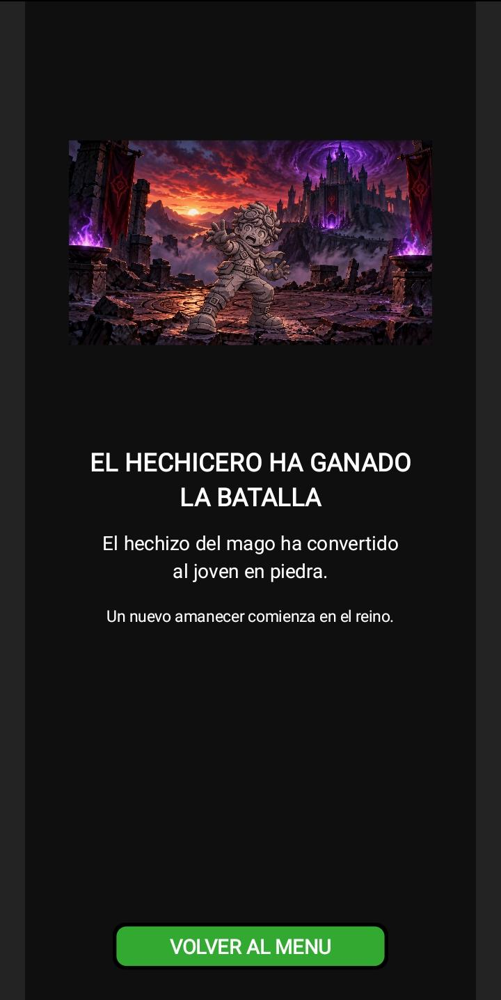

Project 02
The Phoenix Quest
A 2D fantasy adventure for Android with three levels, a final boss and victory and defeat endings.
The adventure
The evil sorcerer has turned every inhabitant of the village to stone. The old mage gives his last dose of Phoenix Elixir to the bravest young person in the village, but it only delays the curse until dawn. The young hero and Phoenix must recover the Fire Feathers and complete the Elixir at the castle.


How it plays
The game starts with three lives. In each of the three levels, the player collects 10 Fire Feathers while avoiding dragons. The HUD shows progress and remaining lives; a short invulnerability window prevents repeated damage from one prolonged collision.



The castle and endings
After the three levels, Phoenix reaches the castle. The objective changes to completing the Elixir to 20/20 while dodging the sorcerer, dragons and cursed orbs. Victory restores the village; losing every life turns the young hero to stone.



Real gameplay
Footage captured on an Android phone: levels, final encounter and victory. Enable sound in the player to hear music and effects.
Development and testing
I built it in Kotlin with Canvas and custom views. Animations, states, hitboxes, collisions, lives and progression work together; SoundPool handles short effects. My usual cycle was to build an APK, install it, play, spot problems on the phone and refine the implementation.
A concrete improvement
Expanding the introduction caused the START button to overlap the text. I changed the layout to measure where the story actually ends and place the button beneath it with a margin. Playing real builds also led me to tune collisions, speeds, the HUD and audio levels.
What I learned
The Phoenix Quest took me from isolated Android exercises to a complete game with connected systems. I learned that a successful build is only one step: the game must be played on a device, observed and refined.